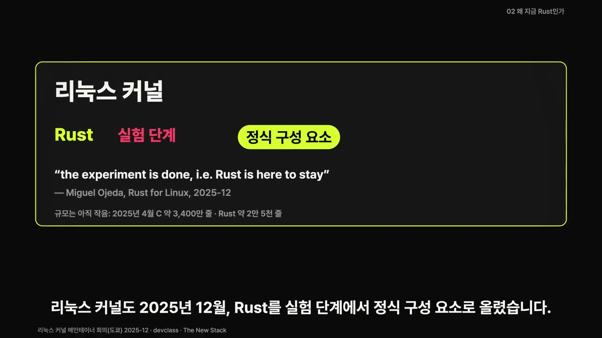
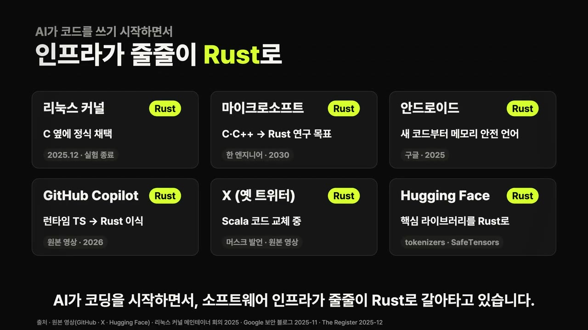
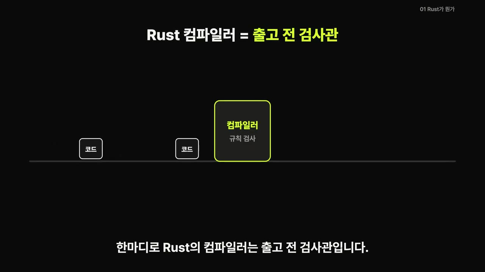
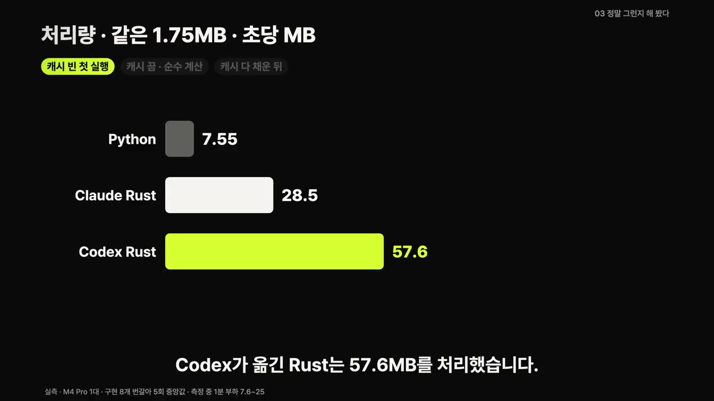
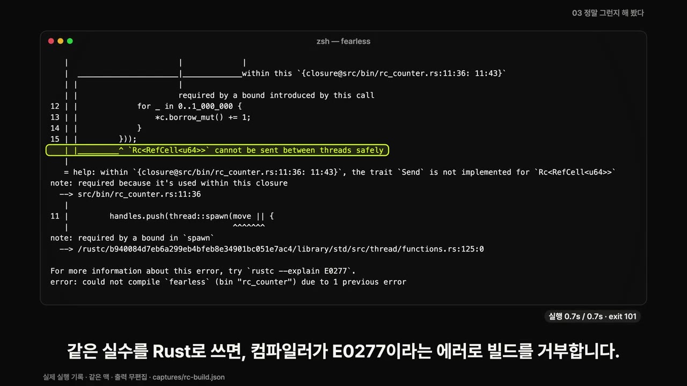
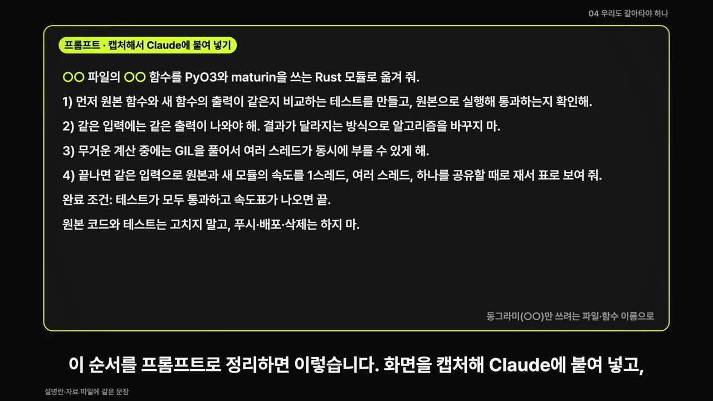

한눈에 보기
- 리눅스 커널의 Rust 정식 채택, 마이크로소프트의 2030년 C/C++→Rust 연구 목표처럼 소프트웨어 인프라가 Rust로 옮겨 가고 있다는 내용입니다. 이유는 보안, AI 서비스의 속도 요구, 그리고 AI가 코드를 쓰기 시작했다는 점입니다.
- Rust는 C/C++만큼 빠르면서도 메모리 실수를 컴파일러가 빌드 단계에서 막아 줍니다. 그래서 사람이 다 읽을 수 없는 AI 작성 코드를 믿는 데 유리합니다.
- 실험에서 Claude Code와 Codex가 Python 토크나이저를 Rust로 옮겼고, 둘 다 테스트 33개를 통과했습니다. 속도는 3.8배·7.6배 빨라졌지만 12스레드가 함께 쓰는 조건에서는 Codex 버전이 Python보다 느려졌습니다.
- 컴파일러는 안전하지 않은 데이터 공유만 막습니다. 결과가 맞는지는 테스트가, 빠른지는 측정이 따로 확인해야 합니다.
- 갈아탈 기준은 세 가지입니다. ① 순수 Python 반복문이 CPU를 잡아먹는 곳부터 옮긴다. ② 맡기기 전에 출력 비교 테스트를 먼저 만든다. ③ 통과 후에도 성능을 재고, 나쁜 숫자는 에이전트에게 돌려준다.
이런 분께 도움이 됩니다
- Python으로 서비스·데이터 처리를 하며 느린 부분을 Rust로 바꿀지 고민하는 개발자
- AI 코딩 에이전트에게 언어 변환·최적화를 맡기려는 사람: 바로 붙여 쓸 프롬프트와 검증 순서를 얻을 수 있습니다.
핵심 내용
인프라가 Rust로 옮겨 가는 흐름
- 리눅스 커널은 2025년 12월 Rust를 실험 단계에서 정식 구성 요소로 올렸습니다. (4:27)

- 마이크로소프트의 한 수석 엔지니어(설명란: Galen Hunt)는 2030년까지 회사의 C/C++ 코드를 AI로 Rust로 옮기겠다는 연구 목표를 내걸었습니다. (0:00)
- 목표는 AI와 알고리즘을 섞어 엔지니어 1명이 한 달에 100만 줄을 옮기는 것입니다. 본인은 '연구 프로젝트'라고 덧붙였습니다.
- 이미 많이 쓰는 Python 도구 속에도 Rust가 들어 있습니다.
- OpenAI 토크나이저
tiktoken의 핵심부가 Rust이고,Pydantic(데이터 검증 라이브러리)은 Rust로 다시 짠 뒤 크게 빨라졌습니다. (2:36) - 그 밖의 예:
tokenizers,Polars PyO3·maturin을 쓰면 Rust로 만든 라이브러리를 Python에서 일반 모듈처럼import할 수 있습니다. 사용자는 Rust가 들어간 줄도 모르고 속도 이득만 봅니다.
- OpenAI 토크나이저

Rust는 어떤 언어인가
- Mozilla에서 시작해 2015년에 첫 정식 버전(1.0)이 나왔습니다. C/C++만큼 빠르면서 메모리 실수를 컴파일러가 미리 막는 언어입니다. (0:52)
- 빠른 이유: Python은 실행하면서 통역사를 거치고, Rust는 실행 전에 기계어로 다 번역해 둔 책을 읽는 방식입니다. C/C++도 같은 방식이지만 메모리 실수를 다 막아 주지는 않습니다.
- 안전한 이유: 컴파일러가 '출고 전 검사관' 역할을 합니다. 규칙에 어긋난 코드는 실행 파일 자체가 만들어지지 않습니다. (1:46)

- 핵심 규칙은 소유권입니다. 값마다 주인이 하나이고, 주인이 사라지는 정확한 시점에 메모리가 치워집니다.
- 그래서 가비지 컬렉터(안 쓰는 메모리를 모아 치우는 청소부)가 필요 없습니다.
- Python과의 관계는 '운전대와 엔진'입니다. Python은 지시만 하고, 실제 계산은 그 밑의 C/C++/CUDA가 합니다. Rust는 이 엔진 자리에 들어갑니다.
💡 Rust는 Python을 밀어내는 게 아니라 Python 밑의 엔진을 바꾸는 언어다.
왜 지금인가 — 세 가지 이유
| 이유 | 영상 속 근거 |
|---|---|
| ① 보안 | 메모리 실수가 보안 사고의 큰 몫을 차지합니다. 구글 안드로이드는 새 코드를 메모리 안전 언어로 쓴 끝에, 2025년 메모리 안전 취약점이 처음으로 전체의 20% 아래로 내려갔습니다. Rust 코드의 메모리 안전 취약점 밀도는 C/C++의 약 1,000분의 1이었습니다. |
| ② AI 서비스 요구 | Python의 GIL(한 번에 한 스레드만 Python 코드를 실행하게 하는 잠금)이 걸림돌입니다. GIL을 끌 수 있게 됐지만 생태계는 아직 따라오는 중입니다. (자막상 불분명) |
| ③ AI가 코드를 씀 | 수백만 줄을 다시 짜는 비용이 AI로 내려갑니다. DARPA는 2024년 C→Rust 자동 번역 프로그램 TRACTOR를 시작하며 LLM 활용 방법을 공모했습니다. |
- 번역 비용이 내려가면 남는 질문은 'AI가 쓴 코드를 어떻게 믿느냐'입니다. 사람이 수천 줄을 다 읽을 수 없으니, 컴파일러가 규칙 위반을 걸러 주는 언어가 유리해집니다. (3:34, 5:22)
💡 AI에게 코드를 맡기기 전에, 사람 대신 결과를 검사해 줄 장치부터 정해 둬야 한다.
실험: 두 에이전트의 Python→Rust 번역
- 대상: 토크나이저(LLM에 넣을 글을 토큰 번호로 바꾸는 부품)
- 합격 기준: 원본 Python과 출력이 하나도 다르지 않은지 보는 테스트 33개를 미리 정해 뒀습니다. (6:20)
- 두 에이전트 모두 컴파일 에러 없이 첫 빌드에 성공했고, 테스트 33개를 모두 통과했습니다.
- 걸린 시간: Claude Code 188초, Codex 397초
- 통과 여부는 끝난 뒤 바깥에서 테스트를 다시 돌려 확인했습니다.
- 속도: 같은 글 1.75MB를 토큰으로 바꾸는 시간을 쟀습니다(캐시가 빈 첫 실행 기준).
| 구현 | 처리량(초당) | 배수 |
|---|---|---|
| Python | 7.55MB | 1배 |
| Claude Code의 Rust | 28.55MB | 3.8배 |
| Codex의 Rust | 57.6MB | 7.6배 |
- 배수는 조건에 따라 2.8~18.4배로 달라졌습니다.
- 측정 조건: M4 Pro 맥 1대, 5회 중앙값. 측정 중 다른 작업이 함께 돌았고, Python 3.14와 3.14t를 따로 표시했습니다.

테스트를 통과하고도 느려진 이유
- 토크나이저 하나를 스레드 12개가 함께 쓰자, Codex 버전이 초당 10.7MB로 떨어졌습니다. 같은 조건의 Python(20.2MB)보다도 느렸습니다. (7:19)
- 원인은 단어 조각 하나를 찾을 때마다 캐시에 자물쇠(lock)를 걸었다 푸는 구조였습니다.
- 비유하면 사전 한 권을 여럿이 보는데, 단어 하나 찾을 때마다 자물쇠를 열고 닫는 셈입니다.
- 테스트 33개는 결과가 같은지만 봅니다. 여럿이 함께 쓸 때 빠른지는 보지 않습니다.
- 이 숫자와 재는 명령을 Codex에게 그대로 돌려주자, 7분 10초 만에 읽기 자물쇠를 문서당 한 번으로 모으는 등 코드를 고쳤습니다. 공유 처리량은 초당 146MB가 됐습니다. (8:16)
💡 '테스트 통과'는 '빠르다'를 보장하지 않는다. 성능도 합격 기준에 넣어야 한다.
컴파일러가 막은 것, 막지 못한 것
- 실험 코드: 스레드 8개가 카운터 하나에 100만 번씩 더합니다. 정답은 800만입니다. (8:29)
- GIL을 끈 Python 3.14t에서 3번 실행하면 140만, 201만, 110만이 나옵니다. 에러 없이 틀린 숫자입니다.
- 같은 실수를 Rust로 쓰면 컴파일러가
E0277에러로 빌드를 거부합니다.

- 안전한 타입으로 바꾸면 빌드가 되고, 매번 정확히 800만이 나옵니다.
- 컴파일러가 막는 건 안전하지 않은 데이터 공유까지입니다. 결과가 맞는지는 테스트가, 빠른지는 측정이 따로 봐야 합니다. (9:15)
우리도 갈아타야 하나 — 기준 세 가지
- 원본 영상의 결론: Rust는 AI를 안전하고, 빠르게, 대규모로 돌리는 인프라의 기본 선택이 되어 가고 있습니다.
- 다만 무조건 옮길 일은 아닙니다.
- 이미 NumPy나 C 라이브러리로 도는 계산은 얻을 게 적고, 재 보기 전에는 모릅니다.
- 이 실험의 NumPy 검색은 1.42ms에서 Rust 1차 2.17ms로 오히려 느려졌고, 2차 최적화 후에야 1.05ms로 앞섰습니다. (10:09)
- C/C++ 서버·시스템이 있는 팀은 구글 안드로이드처럼 '새로 쓰는 코드부터' 메모리 안전 언어로 쓰는 방식이 있습니다.
| 기준 | 내용 |
|---|---|
| ① 옮길 곳 | 순수 Python 반복문이 CPU를 잡아먹는 곳부터 옮깁니다. 이미 C로 도는 곳은 재 봐서 이득이 있을 때만 손댑니다. |
| ② 합격 기준 먼저 | 에이전트에게 맡기기 전에 원본과 출력을 비교하는 테스트를 먼저 만듭니다. |
| ③ 성능도 합격 기준 | 통과 후에도 같은 입력으로 다시 재고, 숫자가 나쁘면 그 숫자를 그대로 에이전트에게 돌려줍니다. |
따라 해보기
준비물
- Python 프로젝트와, 오래 도는 순수 Python 함수 1개
- AI 코딩 에이전트(영상에서는 Claude Code·Codex 사용, 각 서비스의 계정·요금제 필요)
- Rust 개발 환경과
PyO3·maturin. 설치는 영상에서 생략됐고 에이전트가 처리하는 것으로 보입니다. - 소요 시간: 영상 실험 기준 에이전트 작업 3~7분, 재최적화 약 7분
단계별 방법
🔁 Python 함수를 Rust로 옮기는 순서
- 대상 함수 고르기
- 비교 테스트 만들기
- 프롬프트로 맡기기
- 테스트 재확인
- 속도 세 조건 측정
- 나쁜 숫자 되돌려주기
- 1대상 함수 고르기
순수 Python 반복문이 CPU를 많이 쓰는 함수를 고릅니다. NumPy·C 라이브러리로 이미 도는 함수는 뒤로 미룹니다. (10:09)
- 2비교 테스트 만들기
원본 함수와 새 함수의 출력이 같은지 비교하는 테스트를 만듭니다. 원본으로 실행해 통과하는지 먼저 확인합니다. 영상에서는 에이전트에게 이것까지 시켰습니다.
- 3프롬프트로 맡기기
아래 프롬프트의 ○○를 파일·함수 이름으로 바꿔 에이전트에 붙여 넣습니다. (11:04)

○○ 파일의 ○○ 함수를 PyO3와 maturin으로 옮기는 프롬프트 · ▶ 11:05 - 4테스트 재확인
에이전트가 끝났다고 해도 바깥에서 테스트를 직접 다시 돌려 통과를 확인합니다.
- 5속도 세 조건 측정
같은 입력으로 1스레드, 여러 스레드, 하나를 공유할 때를 각각 재서 원본과 비교합니다.
- 6나쁜 숫자 되돌려주기
원본보다 느린 조건이 있으면 그 숫자와 재는 명령을 그대로 에이전트에게 주고 다시 고치게 합니다.
3단계에 입력할 내용 (설명란 원문)
○○ 파일의 ○○ 함수를 PyO3와 maturin을 쓰는 Rust 모듈로 옮겨 줘.
1) 먼저 원본 함수와 새 함수의 출력이 같은지 비교하는 테스트를 만들고, 원본으로 실행해 통과하는지 확인해.
2) 같은 입력에는 같은 출력이 나와야 해. 결과가 달라지는 방식으로 알고리즘을 바꾸지 마.
3) 무거운 계산 중에는 GIL을 풀어서 여러 스레드가 동시에 부를 수 있게 해.
4) 끝나면 같은 입력으로 원본과 새 모듈의 속도를 1스레드, 여러 스레드, 하나를 공유할 때로 재서 표로 보여 줘.
완료 조건: 테스트가 모두 통과하고 속도표가 나오면 끝.
원본 코드와 테스트는 고치지 말고, 푸시·배포·삭제는 하지 마.
따라 할 수 있는지 점검
- ✅ 바로 따라 할 수 있음: 3단계(프롬프트 원문 제공), 4단계, 6단계
- ⚠️ 1단계 「대상 함수 고르기」: '가장 오래 도는 함수'를 찾는 방법이 영상에 나오지 않습니다. →
cProfile같은 Python 프로파일러로 함수별 실행 시간을 확인합니다. (보충) - ⚠️ 준비물: Rust 툴체인·
maturin설치 방법이 영상에서 생략됐습니다. → rust-lang.org 공식 설치 안내로 Rust를 깔고pip install maturin을 실행합니다. (보충) - ⚠️ 5단계 「속도 세 조건 측정」: 측정 스크립트와 기준(반복 횟수 등)은 영상에 없습니다. 영상은 5회 중앙값을 썼습니다. → 프롬프트 4)번으로 에이전트가 표를 만들게 하고, 같은 방식으로 여러 번 재서 중앙값을 봅니다.
- ❓ 2단계를 사람이 먼저 할지 에이전트에게 맡길지는 영상 안에서 엇갈립니다. 기준 설명에서는 '맡기기 전에' 만들라고 하고, 프롬프트에서는 에이전트에게 먼저 만들게 합니다. 중요한 코드라면 테스트를 직접 검토한 뒤 진행하는 편이 안전합니다.
확인 방법
- 비교 테스트가 원본에서도, Rust 모듈에서도 모두 통과합니다.
- 속도표의 세 조건(1스레드·여러 스레드·공유) 모두에서 Rust가 원본보다 빠릅니다. 특히 '공유' 조건을 빼먹지 않습니다.
막히면
- 테스트는 통과했는데 공유 조건에서 느리다면, 실험 사례처럼 잠금(lock)을 너무 자주 거는 구조일 수 있습니다. 숫자를 그대로 에이전트에게 돌려줍니다.
- NumPy 기반 함수는 처음 옮기면 오히려 느려질 수 있습니다(1.42ms → 2.17ms). 재 보고 이득이 없으면 원래대로 둡니다.
- 컴파일이 됐다고 결과까지 맞는 건 아닙니다. 테스트와 측정을 따로 확인합니다.
기억할 숫자·인용
- 2015년: Rust 1.0 발표 / 2025년 12월: 리눅스 커널 Rust 정식 채택
- 구글 안드로이드: 2025년 메모리 안전 취약점이 처음으로 전체의 20% 미만. Rust의 취약점 밀도는 C/C++의 약 1/1,000
- 마이크로소프트 연구 목표: 2030년까지, 엔지니어 1명이 한 달에 100만 줄 이전
- 실험: 테스트 33개 / Claude Code 188초, Codex 397초 / 7.55 → 28.55 / 57.6 MB/s (3.8배·7.6배), 조건별 2.8~18.4배
- 공유 조건: Codex 10.7MB/s < Python 20.2MB/s → 재최적화 후 146MB/s
- GIL 끈 Python 3.14t 카운터 결과: 140만·201만·110만(정답 800만) / Rust는
E0277로 빌드를 거부 - "Python is the steering wheel. C, C++, and CUDA are the engine." (원본 영상 인용)
생각해볼 점
- (영상 내용) 측정 중 다른 작업이 함께 돌아 부하가 7.6~25였다고 스스로 밝혔습니다. 절대값보다 상대 비교로 보는 게 맞습니다.
- (내 의견) 실험 대상이 토크나이저 하나라서, 에이전트 성능 차이(Claude Code 3.8배 vs Codex 7.6배)를 일반화하기는 어렵습니다. 에이전트를 다시 실행하면 결과가 달라질 수도 있습니다.
- (내 의견) Rust 모듈을 추가하면 빌드·배포 환경과 팀의 유지보수 부담이 늘어납니다. 이 비용은 영상에서 다루지 않았으니 속도 이득과 함께 따져 봐야 합니다.
바로 해볼 일
pip list로 쓰고 있는 패키지 중tokenizers·polars·pydantic처럼 이미 Rust가 들어간 도구가 있는지 확인하기- 프로젝트에서 가장 오래 도는 순수 Python 함수 하나를 골라 출력 비교 테스트부터 만들기
- 위 프롬프트를 저장해 두고, 결과를 볼 때 '여러 스레드가 공유할 때' 속도를 꼭 확인하기